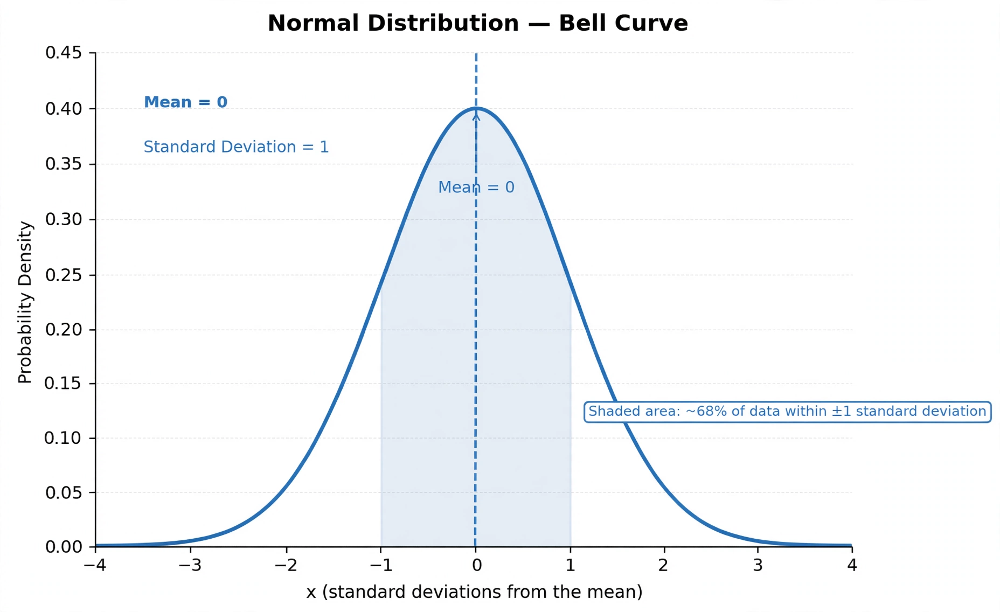

Normal distribution

[Image: The normal distribution curve, a symmetric bell shape centred on the mean]
In probability theory and statistics, a normal distribution (also called the Gaussian distribution or bell curve) is a continuous probability distribution characterised by a symmetric bell-shaped curve determined by its mean μ and standard deviation σ.
It is arguably the most important distribution in statistics, both because it arises naturally — the central limit theorem shows that sums of many independent random effects tend to be normally distributed — and because it underlies much of classical statistical inference. Carl Friedrich Gauss and Pierre-Simon Laplace developed its theory in the early 19th century, building on de Moivre's approximation to the binomial (1738).
Properties
About 68% of values lie within one standard deviation of the mean, 95% within two, and 99.7% within three (the empirical rule). Normal distributions are closed under addition: sums of independent normal variables are normal. The standard normal distribution has mean 0 and standard deviation 1; its density involves e^(−x²/2)/√(2π).
The normal distribution maximises entropy for a given mean and variance, and its characteristic function and moment-generating function have simple closed forms.
Applications
Measurement errors, heights and many biological quantities are approximately normal. The distribution is central to hypothesis testing, confidence intervals, regression, quality control, and finance (though financial returns have fatter tails than the normal model assumes).